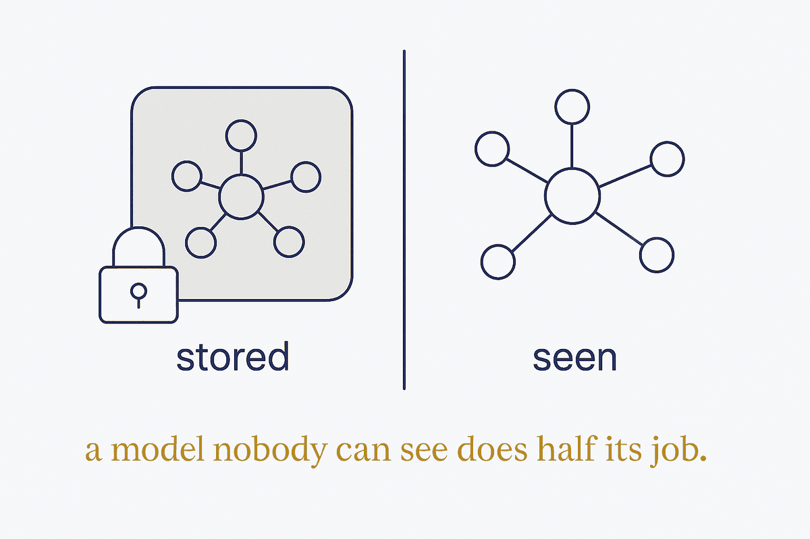

Why diagrams matter at all

There is a reason to care about this beyond tidiness. A structure nobody can see does half its job. Structure makes knowledge exist in a form you can work with; seeing it is what makes it possible to trust, question and act on.
For a data modeller the two were never separate. The core artifact of the trade is a diagram. The conceptual model a business signs off on is a drawing. Structure and its picture are not a thing and a rendering of it — they are the same object, seen at the depth each audience needs.
Each half is weak alone. Structure without visualisation is a model only its author can read. Visualisation without structure is a pretty picture with nothing underneath, drifting the moment the world changes. Together you get the rare and valuable thing: a structure that is real — queryable, validated — and visible, so anyone can read it and push back.
That pushing back is the point. A diagram is where a model meets the people who have to trust it. Make it readable and they will tell you what is wrong — which is how the model gets better.